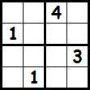

Most modern programming languages involve changing the program's state or general control flow.
if (x == 'hello') {
console.log('Hello!');
} else {
console.log('Goodbye!');
}We express how a program should accomplish a given task.
Logic programming, instead, is constraint-based.
We define facts and rules, then query our knowledge base to get a result.
coder(jordan).
coder(ryan).
?- coder(X).
X = jordan ;
X = ryanThis is also known as declarative programming.
Facts are simple truths. Water is wet. Fire is hot.
hot(fire).
wet(water).Facts also have arity.
age(jordan, 21).
dob(jordan, 7, 20, 1992).Notice these elements have no real type, only arity. These also do not return anything, they are true!
Rules allow you to define truths using logical inference. They are declared in the form of:
Head :- Bodywhich states "The Head is true if Body is true." For instance, let's say a junior coder is a coder who is 21 years old.
junior_coder(X) :- coder(X), age(X, 21).price(purse, 200).
price(shoes, 75).
price(candy, 2).
price(car, 20000).
expensive(Item) :- price(Item, N), N > 50.Here we are saying an item is expensive if its price is greater than 50. We can then query our data set:
?- expensive(X).
X = purse ;
X = shoes ;
X = car.atom: No real meaning, usually lowercase. (jordan, 'example')
number: Floats an integers.
variable: Strings of letters, numbers, and underscores beginning with an uppercase letter or underscore. Very similar to logic notation - placeholders.
compound term: A functor with a list of arguments. Used to represent collections of data.
RECAP
Lowercase strings, such as jordan, or water, are known as atoms which hold
no value other than their name.
Uppercase strings are known as variables. Prolog uses a process called unification to assign values (atoms or numbers) to these variables in order to make your statements correct.
Prolog statements can contain patterns that are matched (or unified) to a
given input. Consider a rule same(A, B) which is true if A and B are equal.
same(A, B) :- A is B.
?- same(14, 14).
true.
?- same(14, 13).
false.We can do better.
same(A, B) :- A is B.
... VS ...
same(A, A).If prolog fails to unify a given input to our statements, it will return
false. same(13, 14) will not match, but same(5, 5) will.
Note: All items will match to "_", which acts as a wildcard.
Lists in prolog are represented in the form of [Head|Tail].
They can be rewritten using syntactic sugar in the form of [1, 2, 3, etc].
We can implement pattern matching using the list's true form.
starts_with_5([Head|Tail]) :- Head is 5.starts_with_5([Head|Tail]) :- Head is 5.
?- starts_with_5([1,2,3]).
false.
?- starts_with_5([5,6,7]).
true.
?- starts_with_5([X,6,7]).
X = 5.Let's define a rule all_equal/2 which is true if all elements in a list L
are equal to N. We'll use pattern matching to accomplish this.
all_equal([], _).
all_equal([N|T], N) :- all_equal(T, N).Prolog uses a process called unification to solve problems.
Rather than returning values, like many modern programming languages, queries will search your data intelligently in order to satisfy the conditions you have specified.
We did not tell our program to loop through our items, we simply clearly defined what it means to be expensive, and Prolog did the rest.
Prolog shines when you are given a problem with clear constraints. Some examples include:
It's also fun to use when solving logic puzzles such as the Eight Queens problem or grid puzzles. Let's take a stab at Sudoku.
Let's try to solve the following Sudoku puzzle.

First, let's form a notation to locate each individual cell. We'll say CXY points to the Yth cell in the Xth column. (C13 = 4).
What are our constraints? Remember, be explicit.
all_between/3Let's write a rule to determine if a given list L is composed of elements which are all between A and B.
all_between(_, _, []).
all_between(A, B, [H|T]) :-
between(A, B, H), all_between(A, B, T).all_different/1We need to determine if a list has no duplicate elements. We'll make use of
not/1, member/2, and pattern matching to accomplish this.
all_different([]).
all_different([H|T]) :- not(member(H, T)), all_different(T).Using our rules from before, let's solve a 4x4 sudoku puzzle. We'll represent
a puzzle as a list of items [C11, C12, ..., C43, C44].
sudoku([C11, C12, C13, C14,
C21, C22, C23, C24,
C31, C32, C33, C34,
C41, C42, C43, C44]) :-
all_between(1, 4, [C11, C12, C13, C14,
C21, C22, C23, C24,
C31, C32, C33, C34,
C41, C42, C43, C44]),
all_different([C11, C12, C13, C14]), ......
all_different([C21, C22, C23, C24]),
all_different([C31, C32, C33, C34]),
all_different([C41, C42, C43, C44]),
all_different([C11, C21, C31, C41]),
all_different([C12, C22, C32, C42]),
all_different([C13, C23, C33, C43]),
all_different([C14, C24, C34, C44]),
all_different([C11, C12, C21, C22]),
all_different([C13, C14, C23, C24]),
all_different([C31, C32, C41, C42]),
all_different([C33, C34, C43, C44]).*exhale*
23 lines later, we have a 4x4 Sudoku solver. Not bad!
?- sudoku([C11, C12, 4, C14,
1, C22, C23, C24,
C31, C32, C33, 3,
C41, 1, C43, C44]).
C11 = C24, C24 = C32, C32 = C43, C43 = 2,
C12 = C23, C23 = C41, C41 = 3,
C14 = C33, C33 = 1,
C22 = C31, C31 = C44, C44 = 4 .Prolog suggests the following solution:
2 3 4 1
1 4 3 2
4 2 1 3
3 1 2 4Which looks good!
My examples use SWI-Prolog (http://www.swi-prolog.org/).
Check out the Wikipedia article on Prolog for more details on its history and inner-workings.
Learn Prolog Now! is also a fantastic learning resource.
I also can't recommend 99 Prolog Problems enough.
question(X) :- mentioned(X), not(explained(X)).